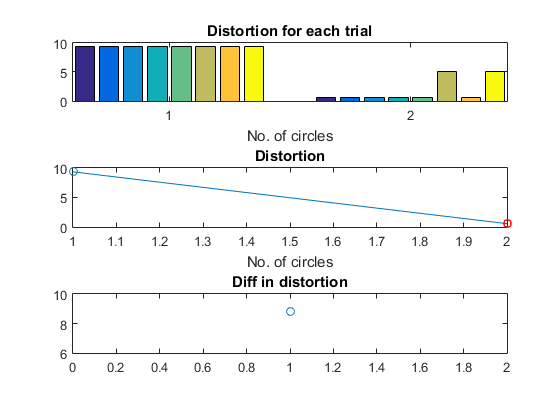

circleFitValidate
Validate (determine) the number of circles for fitting in a 2D dataset
Contents
Syntax
- param=circleFitValidate(data, opt, showPlot)
Description
param=circleFitValidate(data, opt) returns the best parameters for the selected number of circles via cluster validation
- data: 2D data for fitting circles
- opt: Options for validating no. of circles
- opt.circleNumMax: Max no. of circles
- opt.trialNum: No. of trials for circleFit
- opt.errorReductionTh: Error reduction threshold to determine the no. of circles
- opt.interactiveDisplay: 1 for interactive display
- opt.circleFitOpt: options for circleFitOpt
param: The best parameters for the selected number of circles, where each column is the parameters for a circle
Example
im=imread('circleEdge02.png'); [yEdge, xEdge]=find(im); % x and y coordinates of edge data=[xEdge'; yEdge']; opt=circleFitValidate('defaultOpt'); opt.circleNumMax=2; param=circleFitValidate(data, opt, 1);
1/2 2/2 Iteration count = 1/200, distortion = 7.217230 Iteration count = 2/200, distortion = 5.474778 Iteration count = 3/200, distortion = 4.804359 Iteration count = 4/200, distortion = 3.994858 Iteration count = 5/200, distortion = 3.495799 Iteration count = 6/200, distortion = 3.260817 Iteration count = 7/200, distortion = 3.036177 Iteration count = 8/200, distortion = 2.764443 Iteration count = 9/200, distortion = 2.402620 Iteration count = 10/200, distortion = 2.010672 Iteration count = 11/200, distortion = 1.336104 Iteration count = 12/200, distortion = 0.608004 Iteration count = 13/200, distortion = 0.565160 Iteration count = 14/200, distortion = 0.565160 Iteration count = 1/200, distortion = 8.026685 Iteration count = 2/200, distortion = 4.493843 Iteration count = 3/200, distortion = 3.769045 Iteration count = 4/200, distortion = 3.451889 Iteration count = 5/200, distortion = 3.263076 Iteration count = 6/200, distortion = 3.076186 Iteration count = 7/200, distortion = 2.817919 Iteration count = 8/200, distortion = 2.538708 Iteration count = 9/200, distortion = 2.108308 Iteration count = 10/200, distortion = 1.510719 Iteration count = 11/200, distortion = 0.682095 Iteration count = 12/200, distortion = 0.565160 Iteration count = 13/200, distortion = 0.565160 Iteration count = 1/200, distortion = 8.224444 Iteration count = 2/200, distortion = 5.372777 Iteration count = 3/200, distortion = 4.737364 Iteration count = 4/200, distortion = 3.980724 Iteration count = 5/200, distortion = 3.524992 Iteration count = 6/200, distortion = 3.244304 Iteration count = 7/200, distortion = 3.042396 Iteration count = 8/200, distortion = 2.873762 Iteration count = 9/200, distortion = 2.635175 Iteration count = 10/200, distortion = 2.273532 Iteration count = 11/200, distortion = 1.818467 Iteration count = 12/200, distortion = 0.982391 Iteration count = 13/200, distortion = 0.565160 Iteration count = 14/200, distortion = 0.565160 Iteration count = 1/200, distortion = 6.863538 Iteration count = 2/200, distortion = 5.563041 Iteration count = 3/200, distortion = 5.537486 Iteration count = 4/200, distortion = 5.133030 Iteration count = 5/200, distortion = 4.064900 Iteration count = 6/200, distortion = 3.487615 Iteration count = 7/200, distortion = 3.224657 Iteration count = 8/200, distortion = 3.042396 Iteration count = 9/200, distortion = 2.873762 Iteration count = 10/200, distortion = 2.635175 Iteration count = 11/200, distortion = 2.273532 Iteration count = 12/200, distortion = 1.818467 Iteration count = 13/200, distortion = 0.982391 Iteration count = 14/200, distortion = 0.565160 Iteration count = 15/200, distortion = 0.565160 Iteration count = 1/200, distortion = 5.247795 Iteration count = 2/200, distortion = 4.305035 Iteration count = 3/200, distortion = 3.700804 Iteration count = 4/200, distortion = 3.438962 Iteration count = 5/200, distortion = 3.236156 Iteration count = 6/200, distortion = 2.987055 Iteration count = 7/200, distortion = 2.776740 Iteration count = 8/200, distortion = 2.403186 Iteration count = 9/200, distortion = 2.010672 Iteration count = 10/200, distortion = 1.336104 Iteration count = 11/200, distortion = 0.608004 Iteration count = 12/200, distortion = 0.565160 Iteration count = 13/200, distortion = 0.565160 Iteration count = 1/200, distortion = 7.033828 Iteration count = 2/200, distortion = 5.246033 Iteration count = 3/200, distortion = 5.160186 Iteration count = 4/200, distortion = 5.145788 Iteration count = 5/200, distortion = 5.139909 Iteration count = 6/200, distortion = 5.139909 Iteration count = 1/200, distortion = 6.550685 Iteration count = 2/200, distortion = 4.519300 Iteration count = 3/200, distortion = 3.648165 Iteration count = 4/200, distortion = 3.388721 Iteration count = 5/200, distortion = 3.154291 Iteration count = 6/200, distortion = 2.946783 Iteration count = 7/200, distortion = 2.674490 Iteration count = 8/200, distortion = 2.273532 Iteration count = 9/200, distortion = 1.818467 Iteration count = 10/200, distortion = 0.982391 Iteration count = 11/200, distortion = 0.565160 Iteration count = 12/200, distortion = 0.565160 Iteration count = 1/200, distortion = 7.377836 Iteration count = 2/200, distortion = 5.479462 Iteration count = 3/200, distortion = 5.245394 Iteration count = 4/200, distortion = 5.185494 Iteration count = 5/200, distortion = 5.179795 Iteration count = 6/200, distortion = 5.173945 Iteration count = 7/200, distortion = 5.166557 Iteration count = 8/200, distortion = 5.161272 Iteration count = 9/200, distortion = 5.155146 Iteration count = 10/200, distortion = 5.151597 Iteration count = 11/200, distortion = 5.151597